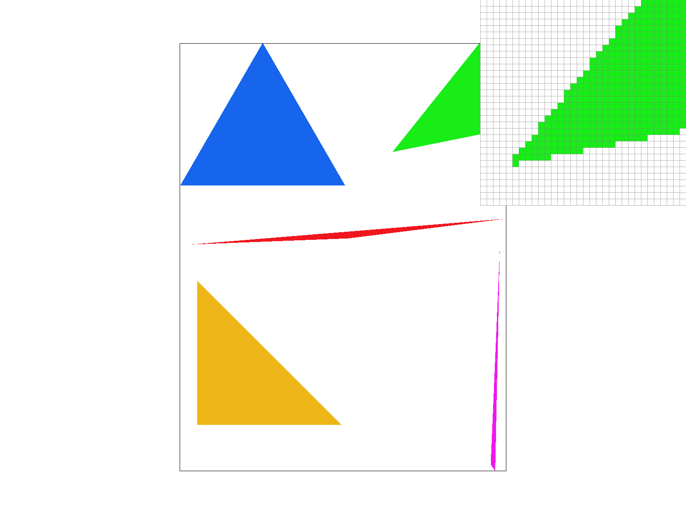
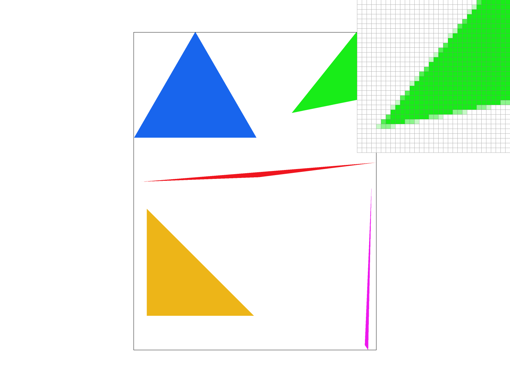
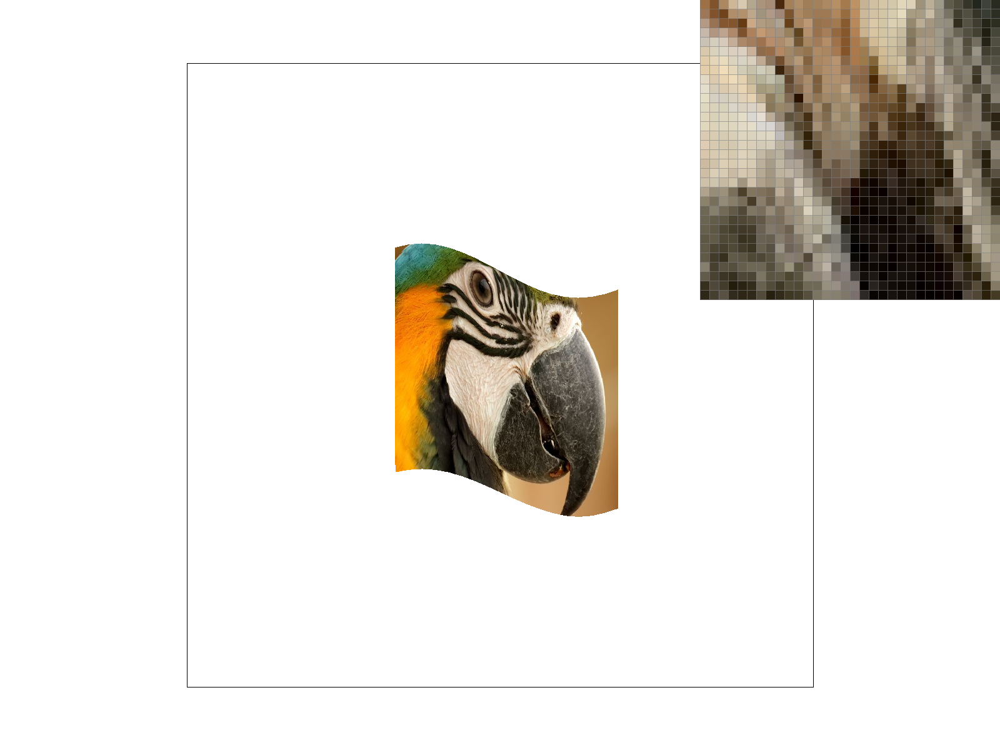
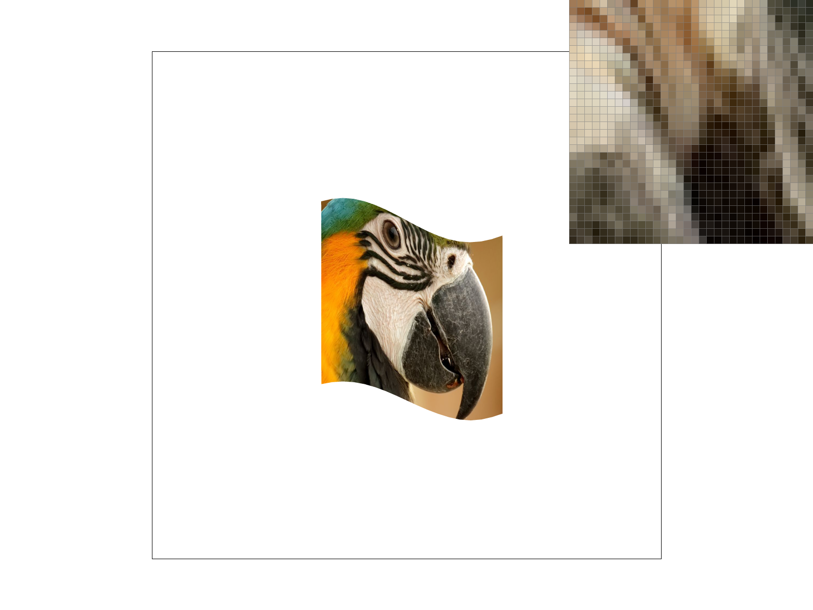
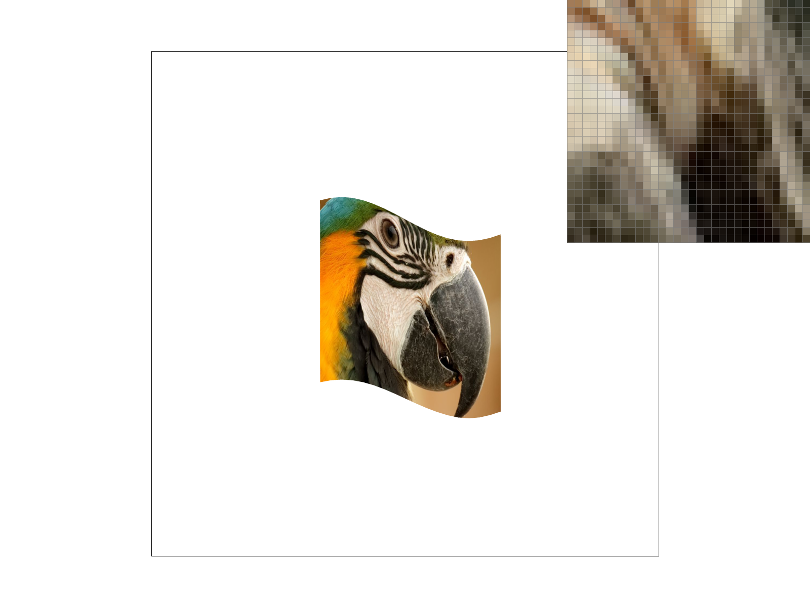
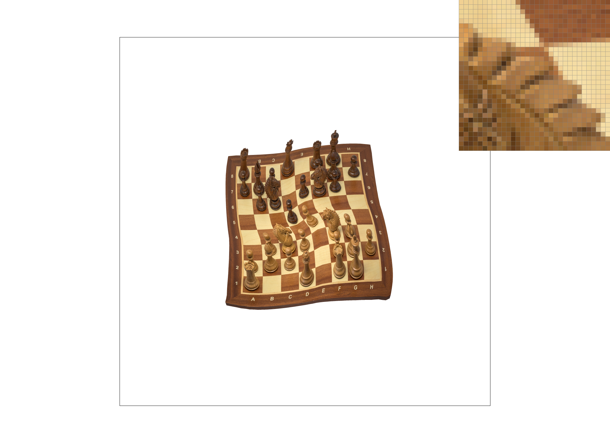

CS184/284A Spring 2025 Homework 1 Write-Up
Names: Nicole Jin
Link to webpage: drestiny1.github.io/cal-cs184-student/
Link to GitHub repository: github.com/cal-cs184-student/hw1-rasterizer-23

Overview
In this homework, I learned how to rasterize images. In particular, I learned about drawing triangle, supersampling, transformations, barycentric coordinates, pixel sampling, and level sampling. These techniques are important for producing smooth and accurate rendered images and form the foundation of modern rasterization systems.Task 1: Drawing Single-Color Triangles
To rasterize triangles, first we calculate the x min, x max, y min, and y max. This is so we don't have to overcheck anything. Then we iterate through this box, check if each point is within all three border lines and color it if so.Here is an example of what a rasterized triangle looks like. If you zoom in, you can see that some of the edges are jagged.

Task 2: Antialiasing by Supersampling
Antialiasing by supersampling is a method to reduce jagged edges by sampling multiple points within each pixel. This helps blend the edges. We use sample buffer to store multiple subsamples per pixel, resolve_to_framebuffer() to average them, and finally, the result is stored in framebuffer.|

|

|
|
Task 3: Transforms
Demoing rotatation, scaling, and translation of blocks.Task 4: Barycentric coordinates
Barycentric coordinates are a way to color a triangle where each of the three vertices has its own color, and the color of any point inside the triangle is computed as a weighted combination of the vertex colors. The weights correspond to how close the point is to each vertex and always sum to 1. The color at each point is computed by c0 * w0 + c1 * w1 + c2 * w2 where c0, c1, c2 are the colors and w0, w1, w2 are the weights.
Task 5: "Pixel sampling" for texture mapping
Pixel sampling is the process of determining the color of a screen pixel by looking up a color from a texture map using texture coordinates. First, barycentric coordinates are computed for each sample inside a triangle and used to interpolate the texture coordinates (u,v) from the triangle vertices. These texture coordinates are then used to sample a color from the texture image.Two pixel sampling methods were implemented: nearest sampling and bilinear sampling. The nearest sampling method selects the texel whose center is closest to the texture coordinate, which is simple and fast but can produce jagged or blocky results. The bilinear sampling method computes a weighted average of the four texels surrounding the texture coordinate, producing smoother and less aliased results. In general, nearest sampling looks more pixelated while bilinear sampling produces smoother textures.
|

|

|
|
|

|
Task 6: "Level Sampling" with mipmaps for texture mapping
Level sampling is the process of selecting the appropriate mipmap level when determining the color of a pixel from a texture. Depending on the viewing angle and distance, a single screen pixel may correspond to a large area of the texture, which can cause noise or shimmering if only the full-resolution texture is used. Level sampling reduces aliasing by choosing a mipmap level that better matches the size of a pixel on the screen.To implement level sampling, first compute texture cordinates at each sample using barycentric interpolation. Then I computed the neighboring texture coordinates to see how fast the texture changes.
There are different benefits and tradeoffs between pixel sampling methods, level sampling methods, and sample rate. For pixel sampling, nearest sampling is faster than bilinear sampling, but bilinear sampling produces smoother textures. For level sampling, L_ZERO is the fastest but produces more aliasing. L_NEAREST is slower but reduces aliasing, and L_LINEAR is slower still but produces the smoothest results. For sample rate, low sample rates are faster but produce more jagged edges and aliasing, while higher sample rates smooth edges but require more computation and memory.
|

|
|
|
|
|